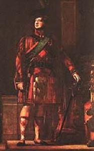

Oran do Mharcus nan Greumach agus do'n Eideadh Ghaidhealach
Le Uilleam Ross
A Song to the Marquis of Graham and to the Highland Dress
Chant en l'honneur du Marquis de Graham et du costume des Highlands
by/par William Ross

Tune - Mélodie
Unknown - replaced here by "Cuir a nall am feileadh-beag's an t-armachd"
Sequenced by Christian Souchon
|
"Cuir a nall am feileadh-beag's an t-armachd!"
(Let's put on philabeg and armour!)
"This tune celebrates the restoration of the Highland dress and armour, after having been proscribed for a number of years as a badge of disloyalty. Let that period by contrasted with the present, when almost every little boy in the kingdom delights to wear the bonnet as a national badge of honour; and let this air commemorate the glorious change." Fraser (The Airs and Melodies Peculiar to the Highlands of Scotland and the Isles), 1874; No. 159, pg. 65. |
"Cuir a nall am feileadh-beag's an t-armachd"
(A nous le kilt et les armes!)
"Ce morceau célèbre la restauration du "Highland dress and armour" (tenue complète comportant épée, dague et pistolets) , qui avait été interdite pendant de nombreuses années comme un signe ostentatoire d'insoumission. Comme cette période diffère de celle que nous vivons, où persque tous les petits garçons du royaume arborent fièrement le bonnet en l'honneur de leur nation. Que cet air soit le symbole de cet admirable métamorphose!" . Fraser (Les Airs et Mélodies propres aux Hautes Terres et aux Iles d'Ecosse), 1874; No. 159, pg. 65. |
Sheet music - Partition

|
A SONG TO THE MARQUIS OF
GRAHAM AND TO THE HIGHLAND
DRESS. [1]
1. Heavy woe lay on my spirit, Weary, discontented, Which took my strength and force away, Song pleased me not, nor melody; But then a message came to me Which woke me from my dreams, And when I heard the joyful tale My thoughts did quickly rise. 2. This day is lucky, prosperous, shining' Glorious, famous, joyful, Which has releaséd the Scots once more From Lowland plains to Highland shores, From River Tweed to Orkney seas From north to south entirely; More sweet their song o'er strath and glen Than organ of best tuning. 3. Young Marquis of the Grahams Thou clever youth of royal spirit, Long mayst thou live to rule thy clan, With valour, virtue, modesty ; Thou'rt sapling fair of tend'rest bloom, Of timber tall and strong, Oft do the Gaels drink thy health Full mightily in wine. 4. My love the upright, handsome, righteous, Comely, blameless hero, My darting hawk with eyes of blue, The smoothest, famous, active one; Who highest leaped on bridled steed Excelling all in valour, Thou hast gained our cause before each court And hast dispelled our hardship. ' (twice) 5. As I did wander every day, Thou wast for e'er remembered, My love unto the land I left My hopes to my returning there ; Then shall my ardour quickly rise With spirit brave and active, My heart with joy is now afire, My news itself is rapture. 6. A fashion's come in with the Act Which ordered plaids in plenty, The tartans now arise again With many a dexterous noise; While skilful maidens weave and dye With gladness, and with pride' Each one to clothe her own true love As always is her joy' 7. If war is on, or peacetime That will not make us soft, In hosts or armies, if they choose, Or in revolt, we'll not refuse, We'll draw up close to face the foe In our own noble garb, With strong unbending swords of steel Untiring in pursuit ! 8. Since we have got a mode for usage Let our old pride awaken' Each man resolved, without deceit, And not a trace of th' English here; With joy and eager willingness To send the King [2] back home, May I now die if I'd prefer not That to any peace! [3] [4] (bis) Translated from the Gaelic by John Lorne Campbell, "Highland Songs of the '45" - 1932) |
ORAN DO MHARCUS NAN GREUMACH AGUS DO'N EIDEADH
GHAIDHEALACH
1. HU trom an t-airsneal a bh' air m'aigne Le fadachd us le mi-ghean, A bhuin mo threàir's mo thàbhachd dhiom, Cha ghabhadh ceôl no mànran rium; Ach thàinig ùr-thosgair dam ionnsaigh A dhùisg mi as mo shuain, Dar fhuair mi'n sgeul bha môr ri héigheach Gun d'eutromaich mo smuain. 2. Is 1à sealbhach, rathail, dealrach, Allail, ainmeil, àghmhor, A dh'fhuasgail air na h-Albannaich O mhachraichean gu garbhlaichean, O uisge Thuaid gu Arcamh-chuain 0 dheas gu tuath gu léir; Is binne'n srann feadh shrath us ghleann Na organ gun mheang gleus. 3. A Mhàrcuis ôig nan Greumach, Fhir ghleusd'an aigne rioghail, O, gu ma buan air t'aiteam thù Gu treubhach, buadhach, macanta; 'S tù'n ùr-shlat àluinn 's mùirneil blàth De'n fhiùbhaidh ard nach crion, Gur tric na Gàidheil ag ôl do shlàint' Gu h-àrmunnach air fion. 4. Mo cheist am firean foinneamh, direach, Maiseach, fior-ghlan, ainmeil, Mo sheobhag sùil-ghorm, amaisgeil, Tha comhnant, cliùiteach, bearraideach, A b'aird'a leumadh air each-sréine Am barrachd euchd thar chàich, 'S tù bhuinnig cùis 'sa bhar gach cùirt, 'S a chuir air chùi ar càs ! (bis) 5. Air bhith air farsan dhomh gach là Gur tù tha'ghnàth air m'inntinn, Mo rùn do'n tir o'n d'imich mi 'S mo shùil air fad' gu pilleadh rith'; 'S ann thogas orm gu grad mo cholg, Le h-aigne meanmnach, treun, Mo chliabh tha gabhail lasadh aighir, Is ait mo naidheachd féin. 6. Thàinig fasan anns an Achd A dh'orduich pailt'am féileadh' Tha éirigh air na breacanan Le farum neo-lapanach; Bidh ôighean tapaidh sniomh's a'dath' Gu h-éibhinn, ait, le h-uaill, Gach aon diubh'g éideadh a gaoil féin Mar's réidh leo anns gach uair' 7. Biodh cogadh ann, no siothchainnt, Cha chuir sin sior-euchd oirnn, An arm no feachd ma thogras iad No'n àr-amach, cha n-obamaid, Le 'r teannadh suas ri h-uchd au fhuathais Le 'r n-earradh uasal fin ; Le lannan cruadhach, neartmhor, buan, A leantuinn ruaig gun sgïos ! 8. O'n fhuair sinn fasan le sàr-chleachdadh, Dùisgeadh beachd er sinnsear, Le rùn gun chéilg'sna h-uile fear 'S gun mheirgh' air leirg nan Lunnainneach; Le sunnd us gleus us barrachd spéis Thoirt'àite féin do'n Righ' Mo bhàs gun éis mur b'fhearr liom féin sin Na ge d'éighte 'n t-sith ! (bis) Source: Orain Ghàidhealach mu Bhliadhna Theàrlaich deasaichte le Iain Latharna Caimbeul (1932) |
CHANT EN L'HONNEUR DU MARQUIS DE GRAHAM ET DU COSTUME DES HAUTES TERRES [1]
1. Mon cœur était plein de chagrin, Comme mes yeux de larmes J'étais sans force, sans entrain, Mes chants dénués de charme. Mais la nouvelle qu'on reçoit Met fin au mauvais rêve. Rien ne peut égaler ma joie: Le mourant se relève. 2. Car ce jour heureux vaut d'être marqué De quelque blanche pierre. Il libère le pays tout entier, Hautes et Basses Terres: Nos monts, nos vallées, du nord au midi, De la Tweed aux Orcades Résonnent de chants plus jolis Que les doctes aubades. 3. Jeune et sage marquis de Graham Toi que les rois écoutent Puisses-tu mener longtemps ton clan Sur la vertueuse route. Jeune arbre né d'une tendre fleur, D'une pousse haute et forte. Plus d'un Gaël, avec ardeur, Toast après toast te porte. 4. Ami sincère et droit, au port altier, Sans peur et sans reproche, Epervier rapide aux yeux bleu d'acier, Habile dans l'approche, Toi qu'on voit monter les meilleurs purs-sangs, Tu sus par ton charisme Être aux prétoires triomphant Et vaincre l'ostracisme. (bis) 5. Je pensais à toi chaque jour Quand j'étais dans l'errance. C'était toi l'espoir du retour Aux lieux de mon enfance. Je sens renaître mon ardeur Combattive et rebelle. L'allégresse enflamme mon cœur Savourant la nouvelle. 6. La mode que l'Acte réintroduit Veut des plaids par centaines; Des mains adroites tissant sans bruit L'antique tiretaine; Les femmes agiles avec fierté La tissent et la teintent. La joie d'en vêtir qui leur plait Ne s'est jamais éteinte. 7. Que l'on soit en guerre ou bien en paix Nous fuyons l'indolence, Que nous soyons admis aux armées, Ou prêts à la revanche. Nous voulons affronter, quel qu'il soit, Dans nos nobles costumes L'ennemi réduit aux abois, C'est là notre coutume. 8. Que revive notre ancienne fierté Comme l'ancienne guise! Et qu'il ne reste plus trace d'Anglais Ici, qu'on se le dise! Que le Roi retourne chez lui [2], car c'est Le vœu de tout le monde. Et plutôt qu'une indigne paix J'aimerais mieux la tombe! [3] [4] (bis) (Trad. Ch. Souchon (c) 2009) |
|
The following first two notes are taken from "Highland Songs of the '45" by John Lorne Campbell, 1932, and the third one from John McKenzie's "Sar-Obair nam Bard Gaelach - Beauties of Gaelic Poetry", Glasgow, 1865
[1] The "Disclothing Act" was repealed in 1782, thanks largely to the efforts of the then Marquis of Graham . [2] i.e. George III , back to Hanover' [3] I'd prefer that to any peace : This song, as its title indicates, was composed on the repeal of President Forbes's Disclothing act, and an anecdote is related of its first rehearsal, which we deem not unworthy of a place here. Our author, like all other poets of his day and country, was a staunch Jacobite, while his father was equally firm in his adherence to the family of Hanover. William had composed the song during one of his excursions through the country, where he probably heard of the erasure of the obnoxious act from the Statute Book, and sung it for the first time to a happy group of rustics who were in the habit of congregating nightly at his father's inglenook to hear his new compositions. When he came to the last stanza, in which he indirectly lampoons his Majesty, " Ah !" said his father, involuntarily laying his hand on a cudgel, " ye clown, you know where and when you sing that." " Really, father," replied the poet, " I would sing it in the House of Commons if you were not there!" [4] The same topic was addressed by Duncan Ban McIntyre in the song Òran don Èideadh Ghàidhealach . |
Les deux premières notes qui suivent sont tirées des "Chants des Highlands de 1745" de John Lorne Campbell, 1932 et la 3ème de "Sar-Obair nam Bard Gaelach - Beautés de la poésie gaélique", de John McKenzie, Glasgow, 1865
. [1] C'est en grande partie grâce aux démarches du Marquis de Graham de l'époque que le "Disclothing Act" fut abrogé en 1782. [2]c.à.d. que Georges III retourne à Hanovre. [3] Et plutôt qu'une indigne paix : Ce chant, comme son titre l'indique, a trait à l'abrogation du "Disclothing Act" du Président Forbes. Il existe une anecdote à propos de la première récitation publique qu'en fit l'auteur et qu'il convient de rapporter ici. C'était, comme tous les poètes écossais de l'époque, un Jacobite convaincu, tout autant que son père était un Hanovrien forcené. William avait composé ce chant lors d'une excursion dans la campagne pendant laquelle lui parvint la nouvelle du retrait de l'acte funeste du Registre des Statuts du Royaume. Il le chanta pour la première fois à un petit groupe de paysans privilégiés qui avaient coutume de se réunir le soir chez son père, pour y entendre, auprès de l'âtre, ses nouvelles compositions. Quand il en fut à la dernière strophe, qui s'en prend indirectement à sa Majesté, "Ah! gredin" dit son père en saisissant machinalement un gourdin, "Crois-tu que ce soit l'endroit et le moment, pour chanter ce genre de chanson?" "Franchement, mon père", répartit le poète, "je la chanterais devant la Chambre des communes, à condition que tu n'y sois pas." [4] Le même sujet a été traité par Duncan Ban McIntyre dans le chant Òran don Èideadh Ghàidhealach . |
|
ABOUT TARTAN
These repressive laws were finally repealed in 1782, by which time much of the old lore and skills had been lost or discarded as inappropriate to the new politico-economic circumstances in which the Highlanders found themselves and two generations of children had been born and were raised in the ignorance of the language, customs of their ancestors. The word 'tartan' is derived from the French 'tiretaine' which described a type of material, a wool fabric, not a specific colour or pattern, whereas the Gaelic for tartan is 'breacan'. There is no evidence of specific clan tartans prior to the late eighteenth century. No contemporary reports of the Battle of Culloden make mention of clan tartans. The Jacobite song 'My bonnie moorhen' describes Charlie's tartan as follows: My bonnie moorhen has feathers anew And she's a' fine colours but nane o' them blue She's red and she's white and she's green and she's grey My bonnie moorhen come hither away, whereas the song 'He's been long o' coming' gives another description: The youth that should have been our king, Was dress'd in yellow, red, and green, Despite or because of the prohibition, tartan became a symbol of patriotism. Many clan chiefs and their families were painted in tartan attire throughout the prohibition period. In 1822 when George IV visited Edinburgh, Sir Walter Scott persuaded the King, his entourage and all the clan chiefs and their followers to turn out ‘plaided and plumed’ in their true tartan. It fitted perfectly with the romantic movement .(Cf picture above).
In fact,he majority of the pre-1850 patterns bearing clan names can only be traced back to the early 19th century and to
the famous weaving firm of William Wilson & Sons of Bannockburn
(in the Lowlands which remained unaffected by the ban) who introduced standardised colours and patterns in order to maintain quality control and started to name some of his patterns after towns and districts. The use of family names for tartans becomes apparent by the end of the century and this practice increased over the next fifty years until they were compiled in a manual,
the "1819 Key Pattern Book"
.
The naming of clan patterns was given a huge boost by the afore mentioned royal visit to Edinburgh in 1822.
|
A PROPOS DU TARTAN
Ces lois répressives furent finalement rapportées en 1782, une fois que les anciens usages et le savoir-faire nécessaire eurent été perdus ou rejetés en raisons du nouvel environnement politique et économique des Highlands et après que deux générations d'enfants eurent été élevées dans l'ignorance de la langue et des coutumes de leurs ancêtres . Le mot 'tartan' vient du français "tiretaine" qui désigne un tissus de laine et non un coloris ou un motif particulier. Quant au terme gaélique pour désigner le tartan, c'est 'breacan'. Il ne semble pas qu'il y ait eu des tartans spécifiques à tel ou tel clan avant la fin du 18ème siècle. Auncun récit contemporain de la bataille de Culloden ne mentionne de tartans claniques. Le chant Jacobite 'My bonnie moorhen' décrit ainsi le tartan de Charlie: A ma poule d'eau plumage nouveau, Aux jolies couleurs le bleu est de trop. Du rouge et du blanc, du vert et du gris, Et ma poule d'eau s'en vient par ici. tandis que le chant 'He's been long o' coming' en donne une autre description: Il apparut, vêtu de drap, Jaune et rouge et vert à la fois, Malgré ou en raison de l'interdiction, le tartan devint un symbole de patriotisme. Beaucoup de chefs de clans et leurs familles se faisaient peindre revêtus de tartan pendant toute la période d'interdiction. En 1822 lorsque George IV visita Edimbourg, Walter Scott persuada le Roi, son entourage, les chefs de clans et ceux qui les accompagnaient d'apparaître 'ornés du plaid et du panache' chacun dans le tartan de son clan. Ce fut une manifestation tout à fait dans le goût romantique de l'époque. (cf illustration ci-dessus). En fait, la majorité des dessins portant des noms de clans, avant 1850, remontent au plus tôt au début du 19ème siècle et sont dus à la fameuse manufacture de William Wilson et Fils de Bannockburn (dans les Lowlands où l'interdiction ne s'appliquait pas). C'est elle qui introduisit les couleurs et les dessins standards pour avoir une qualité constante et elle commença à désigner certains de ses modèles d'après des villes où des régions. L'usage des noms de famille n'apparaît que vers la fin du siècle et cette pratique s'étendit au cours des 50 années suivantes, jusqu'à ce que ces noms soient consignés dans un manuel, "le Livre des motifs-clés de 1819" . L'affectation de motifs aux différents clans fut fortement encouragée par la visite royale à Edimbourg en 1822 déjà évoquée. |
|
A Breton internaut points out a new feature of tartan clothing: it is becoming a token of overall celticism.
"I play in a pipe band and I am a member of a society of Breton kilt wearers. The first Breton tartan patterns were officially registered with the Scottish courts a few years ago. Kilt dress is spreading since then and nearly a hundred people have joined us so far. This year the first kilted Breton pipe band paraded on Lorient Interceltic Festival.
Tartan has become tantamount to "celticity" in the wake of the overwhelming all-celtic movement.
Contributed by M.Pierre Kerloch (Sept. 2006) |
Un internaute breton signale une nouvelle vocation du tartan: il devient un symbole de celticité en général.
"Je joue dans un pipe band et je suis également membre d'une asso de porteurs de kilt ici en Bretagne. En effet depuis quelques années avec la sortie de tartans bretons officiellement déposés en Écosse, le port du kilt s'est développé, nous comptons une petite centaine de membres. Cette année le premier pipe band en tartan breton a défilé à Lorient au festival interceltique.
Le tartan a maintenant acquis une dimension de représentation universelle de la "celticité" surtout depuis le développement de l'interceltique.
Communiqué par M. Pierre Kerloch (Sept 2006) |